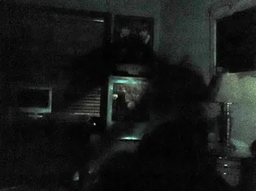

|  |
|---|
| RSE-019 in the living room of Dr. ████ |
RSE-019 is best described as a sentient shadowy cloud of dark, dense smoke roughly in the shape of a humanoid figure. It is unknown if there is any solid matter under RSE-019, as any attempt to interact with it results in its relocation. RSE-019 measures at approximately 1.78 meters in height and has been unofficially weighed at around 150 grams. Further experimentation may be required to calculate a consistent weight.
When any form of light is directed at RSE-019, it will almost instantly relocate itself to the closest ill-lighted area. Completely surrounding RSE-019 in light sources from all angles will result in RSE-019 vanishing until an unlit area in the same room becomes available for its relocation. Non-flash photography of RSE-019 is possible, but requires the specimen to be backlit.
RSE-019 is not hostile in nature and has had no known attempts of escaping confinement as of January 2023. However, RSE-019 has not been observed responding to human speech. It is unknown if RSE-019 can comprehend language. RSE-019 was discovered pacing around the former home of Dr. ████. No known reports of RSE-019 sightings exist before this account.
RSE-019 is held within a 10m x 10m containment cell, equipped with no lighting systems. The observation deck to the cell is to remain dimly lit at all times to avert the possibility of RSE-019 attempting escape. The corridors leading to RSE-019’s cell are to be lit at all times for the same reason.